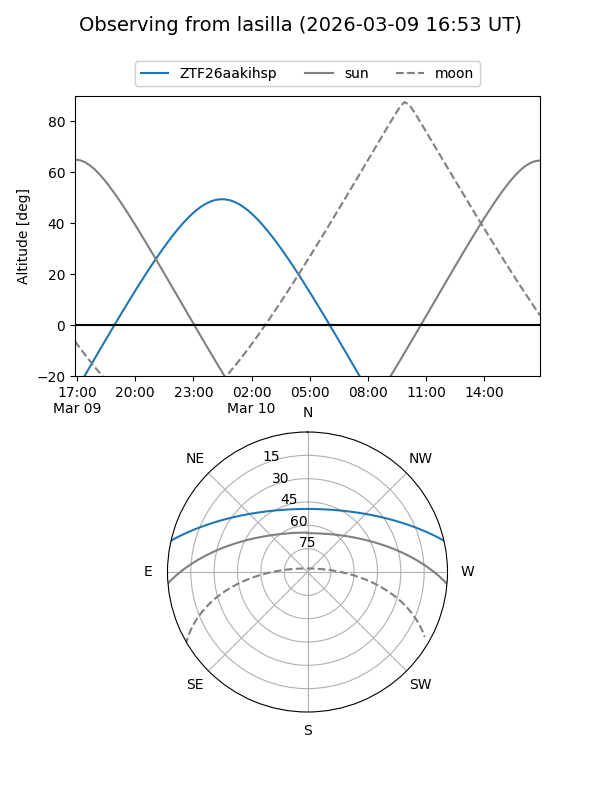
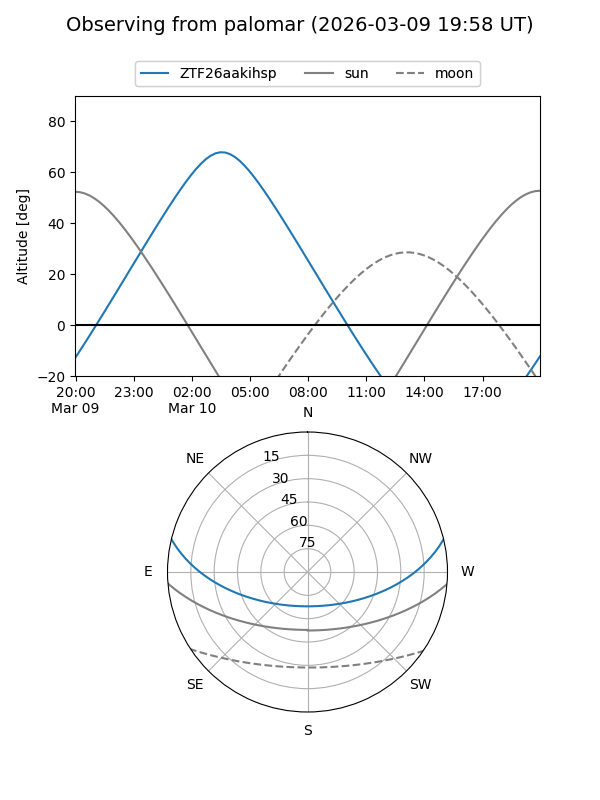

ZTF26aakihsp
Target ZTF26aakihsp at 2026-03-10 03:44
Aliases and brokers:
FINK: link
Lasair: link
ALeRCE: link
alt names
ZTF26aakihsp (ztf,fink_ztf)
Coordinates:
equatorial (ra, dec) = 103.7679,+11.31515
equatorial (HMS+DMS) = 06:55:04.31,+11:18:54.55
galactic (l, b) = (203.2352,+5.92940)
Flags:
Photometry:
last ztfg=19.31
1 ztfg detections
Lightcurve
Visibility


Additional plots